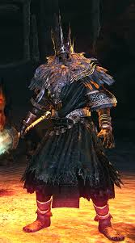
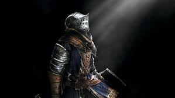

El origen del fuego y la era de los dioses
Dark Souls es conocido por su profundo y enigmático lore, el cual se revela a través de descripciones de objetos, diálogos con personajes y la propia ambientación del mundo.
En el principio, el mundo estaba envuelto en oscuridad y niebla, habitado por dragones eternos. Sin embargo, con la aparición de la Primera Llama, surgieron las almas de los Señores: Gwyn, el Señor de la Luz Solar; Nito, el primero de los muertos; la Bruja de Izalith; y el furtivo Pigmeo, portador de la Dark Soul.
Gwyn, el Señor de la Luz Solar, sacrificando su alma para avivar la llama.
El sacrificio de Gwyn y el ciclo de la llama
Gwyn, temeroso del regreso de la oscuridad, sacrificó su propia alma para avivar la llama, iniciando un ciclo interminable de luz y oscuridad. Sin embargo, esto condenó a la humanidad a la maldición de los no muertos.
Los no muertos son aquellos marcados con la marca oscura, destinados a resucitar una y otra vez. A través del viaje, el elegido no muerto deberá enfrentarse a los antiguos señores y decidir si aviva la llama o permite que la era de la oscuridad tome su curso natural.
El elegido no muerto, destinado a decidir el destino del mundo.
El rol del elegido no muerto
El jugador asume el papel del elegido no muerto, destinado a romper o perpetuar este ciclo. A lo largo de su viaje, se enfrentará a poderosos enemigos, descubrirá antiguas verdades y decidirá el destino del mundo.
La historia se expande a través de las secuelas, Dark Souls II y Dark Souls III, explorando el impacto de la llama y la maldición en diferentes eras y reinos, cada uno con sus propios héroes y tragedias.